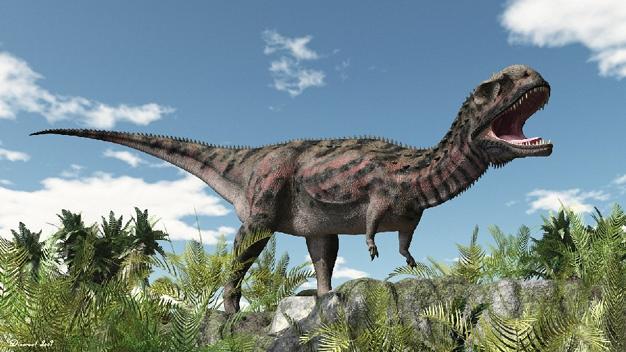
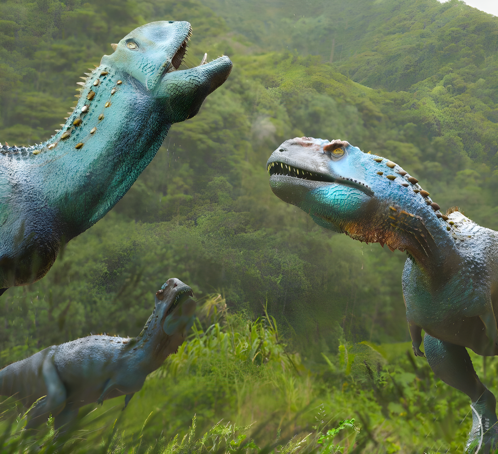
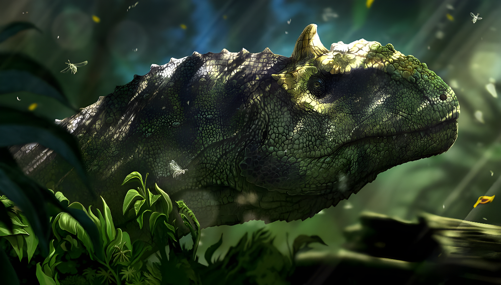
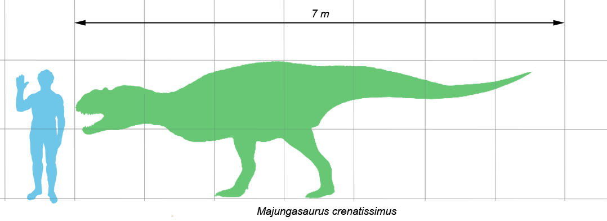
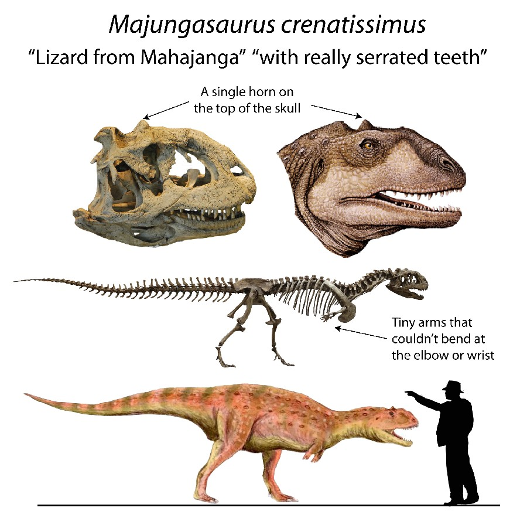
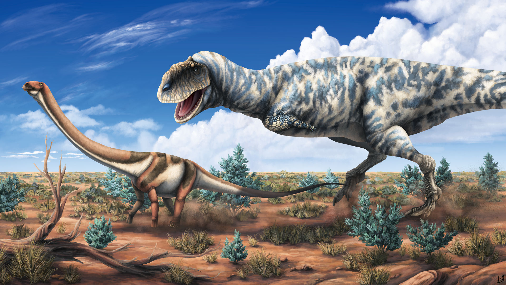
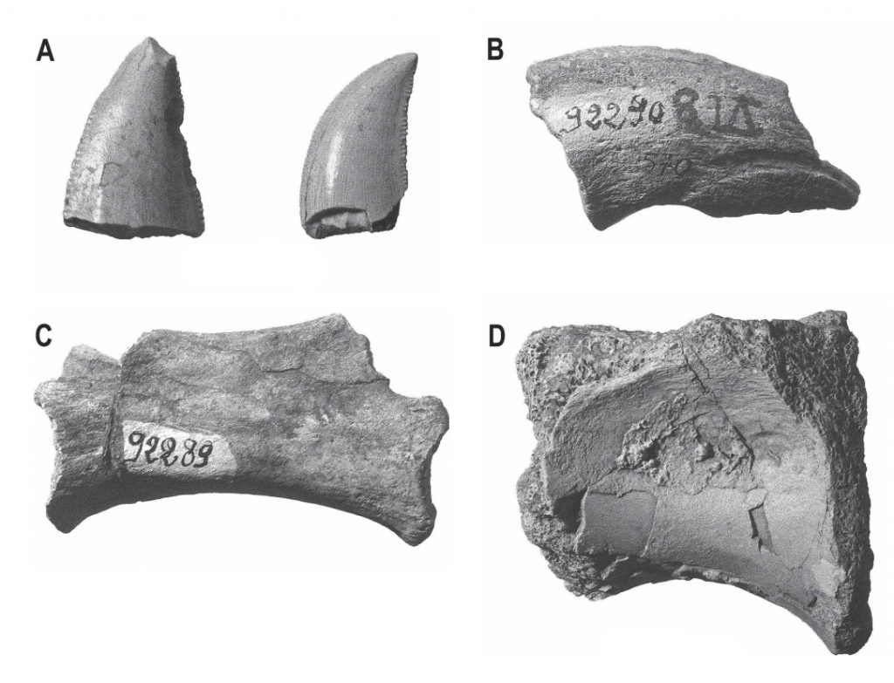
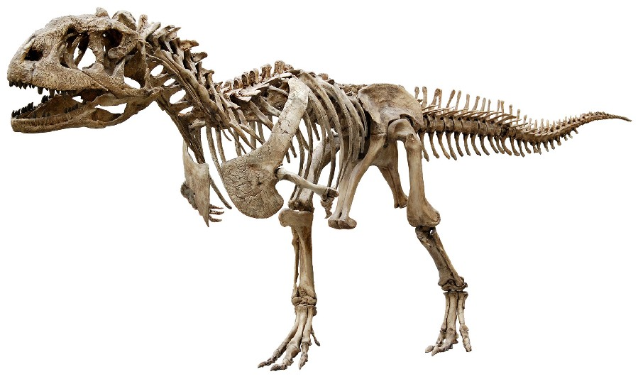
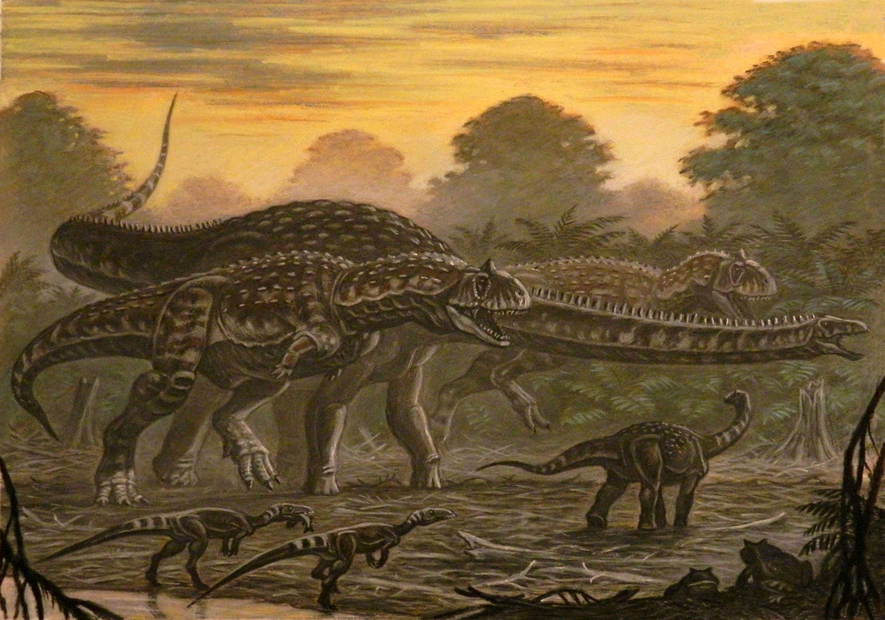

Majungasaurus
Lãnh Chúa Madagascar kỷ Phấn trắng
Tổng quan
Kỷ
Cretaceous
Họ
Abelisauridae
Chi
Majungasaurus
Dài
8 m
Nặng
1.5 tấn
Thức ăn

Majungasaurus là một chi khủng long chân thú Abelisauridae từng sinh sống ở Madagascar vào cuối kỷ Creta. Con khủng long này được gọi tắt là Majungatholus, một tên mà bây giờ được coi là một từ đồng nghĩa cơ sở của Majungasaurus.
Nguồn: wikipedia.org
Phân bố
Khu vực đảo Madagascar
Thông tin thêm về Majungasaurus
Kỷ nguyên
Majungasaurus sống vào cuối kỷ Phấn Trắng, cách đây khoảng 66 đến 70 triệu năm về trước và là một trong số những loài khủng long cuối cùng trên trái đất bị tuyệt chủng trong cuộc đại diệt chủng vào cuối kỷ Phấn Trắng.
Phân bố
Tất cả các hóa thạch Majungasaurus đều được tìm thấy ở Hệ tầng Maevarano ở tỉnh Mahajanga ở Tây Bắc Madagascar. Majungasaurus từng sống ở môi trường trên cạn tại đảo quốc này trước khi bị chia cắt khỏi tiểu lục địa Ấn Độ. Khí hậu trong khu vực lúc đó là bán khô hạn, với nhiệt độ và lượng mưa thay đổi theo mùa. Majungasaurus sống ở những đồng bằng duyên hải bị chia cắt bởi nhiều con sông cát ở vùng trung tâm Bồn địa Mahajanga.
Tên khoa học
Được đặt tên bởi giáo sư Rene Lavocat năm 1955. Cái tên Majungasaurus - Thằn lằn Mahajanga, bắt nguồn từ cách sử dụng tên gọi cũ của Mahajanga, kết hợp với chữ saurus nghĩa là bò sát trong tiếng Hy Lạp. Bên cạnh đó, chi này chứa một loài duy nhất, Majungasaurus Crenatissimus. Con khủng long này được gọi tắt là Majungatholus, một tên mà bây giờ được coi là một từ đồng nghĩa cơ sở của Majungasaurus.
Kích thước
Majungasaurus là một chi khủng long chân thú có kích thước tương tự với chi họ hàng là Carnotaurus, trung bình với chiều dài 6-7 mét (20-3 ft), gồm cả đuôi. Các mảnh hóa thạch của một cá thể lớn cho thấy vài con trưởng thành có thể dài hơn 8 mét (26 ft). Cân nặng ước tính trung bình của Majungasaurus trưởng thành là 1100 đến 1500 kilôgam (2.400 lb).
Ngoại hình
Giống như abelisauridae khác, Majungasaurus là một loài đi đứng bằng hai chân, có mõm ngắn, chi trước thoái hóa nhỏ và ngắn dường như vô dụng, hai chi sau dài hơn và rất chắc khỏe. Majungasaurus cũng sở hữu bộ răng đặc trưng của các abelisaurid với phần mão răng ngắn, nhưng có đến 17 răng ở cả hàm trên và hàm dưới, nhiều nhất trong cả họ chỉ sau chi Rugops.
Chúng có thể được phân biệt với các loài Abelisauridae khác ở chỗ hộp sọ của nó rộng hơn, kết cấu rất thô và xương dày trên đầu mõm của nó, cái sừng tròn duy nhất trên nóc hộp sọ của nó, mà ban đầu bị nhầm lẫn với các đầu của một Pachycephalosauria.
Chế độ ăn
Majungasaurus là động vật ăn thịt trên đỉnh chuỗi thức ăn trong hệ sinh thái của nó, chủ yếu là săn những loài khủng long ăn thực vật như Rapetosaurus. Majungasaurus cũng là một trong số ít các loài khủng long mà có bằng chứng trực tiếp về ăn thịt đồng loại. Khi săn mồi chúng có tập tính chỉ cắn một lần ngập xương con mồi và giữ cho đến khi con mồi khuất phục nên chúng bị hao mòn rất nhanh.
Khám phá
Năm 1895, khi đóng quân ở Madagascar, bác sĩ quân y Félix Salètes dẫn đầu một nhóm người khu vực phía Đông Bắc đảo, cách thị trấn duyên hải Mahajanga (tên cũ là Majunga) 45 km về phía Nam và gần làng Maevarana đã thu thập được một số mẩu xương hóa thạch của một loài mới dọc theo sông Betsiboka. Dựa trên các hóa thạch và dữ kiện được cung cấp bởi Salètes, nhà khảo cổ học nổi tiếng Charles Depéret của Đại học Lyon đã định danh hai loài khủng long mới là Titanosaurus madagascariensis và Megalosaurus crenatissimus.
Năm 1955, Rene Lavocat đã mô tả một mẫu xương răng hóa thạch theropod từ hệ tầng Maevarano cùng vị trí nơi các hóa thạch đầu tiên được phát hiện. Các răng này trùng khớp với các mẫu vật được Deperet mô tả, nhưng mảnh xương hàm cong rất khác biệt với cả Megalosaurus và Dryptosaurus. Do đó, Lavocat đã đề xuất đưa loài theropod này thành một chi tách biệt với tên gọi Majungasaurus.
Lãnh chúa đảo Madagascar
Nếu so với nhiều loài theropod khét tiếng khác, Majungasaurus chỉ có kích thước bằng một nửa, tuy nhiên đối với chúng như vậy đã là quá đủ. Hệ sinh thái cô lập của đảo Madagascar chỉ bao gồm một số loài cá, động vật có vú hay bò sát nhỏ. Các loại khủng long hiếm hoi ở đây bao gồm Rahonavis, Masiakasaurus và sauropod ăn thực vật Rapetosaurus. Một số loài ăn thịt có thể xem là nguy hiểm khác như các bò sát dạng cá sấu Mahajangasuchus và Trematochampsa cũng quá bé nhỏ so với Majungasaurus và cũng chỉ hoạt động gần mặt nước. Vì vậy, Majungasaurus không có kẻ thù tự nhiên và là kẻ thống trị tuyệt đối của đảo Madagascar.
